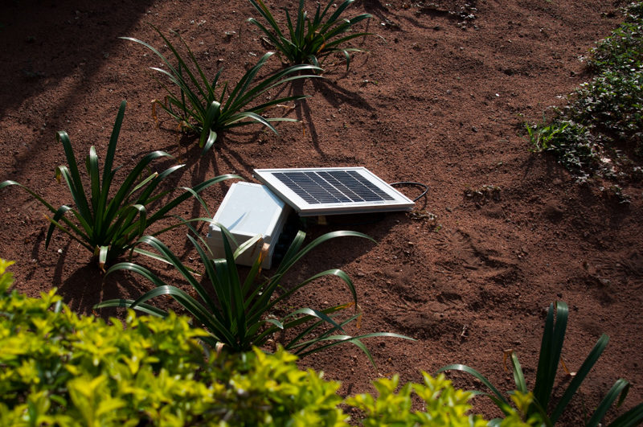
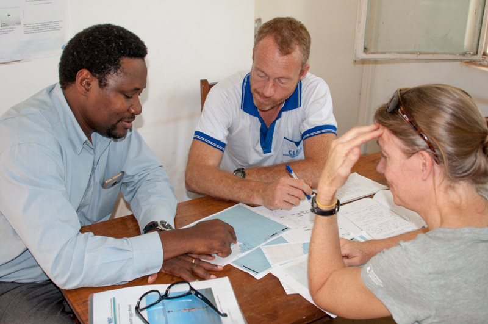
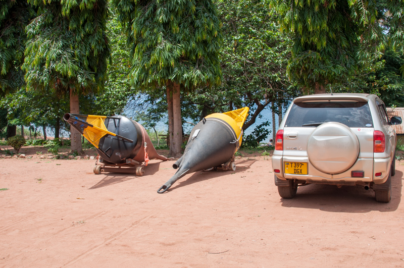
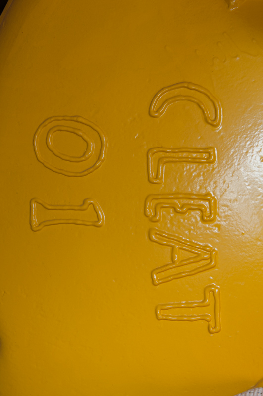
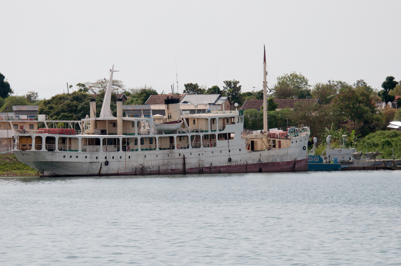

Waiting for the second flight to Kigoma at 3AM.

The Shipping container with the buoy in it behind barb wired fences and a guard at TAFIRI.

A car to give perspective.

The datalogger - trying to get it charged and ready.

Planning and organizing buoy location.

Planning and organizing buoy location.

Working with Ishmail on how to do the deployment

We managed to get the 400 Kg Buoys out of the container.

Buoy 1 is called CLEAT 01

We are lookign at the Mama Benito - the ship that will carry the buoy and anchors to the site.

We are lookign at the Mama Benito - the ship that will carry the buoy and anchors to the site.

We are talkign to the captian and crew of the Mama Benito.

The real African Queen

Fishermen on their way out to fish for the night

Peter is saying his prayers and is very confident.
Catherine always optimmistic